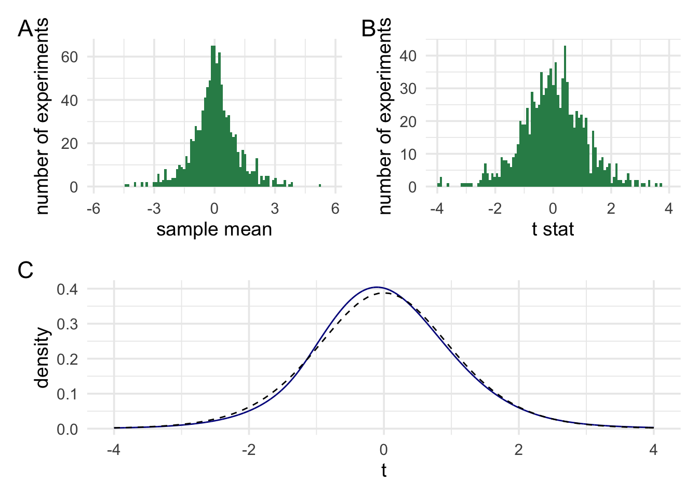

Chapter 1 Null-hypothesis significance testing

Before diving into Bayesian hypothesis testing, it’s worth spending a little time going over Frequentist null-hypothesis significance testing. The reason for this is that I want it to be clear that Bayesian methods and Frequentist methods aren’t just two different ways of answering the same question. Rather, I want it to be clear that Bayesian methods and Frequentist methods are asking fundamentally different questions. For this reason, we’ll start right back at the beginning with p values.
The American Statistical Association (ASA) defines a p value as:
the probability under a specified statistical model that a statistical summary of the data (e.g., the sample mean difference between two compared groups) would be equal to or more extreme than its observed value (Wasserstein and Lazar 2016)
While this is a perfectly acceptable definition, it is maybe a little tricky to understand. The main reason for this is that the definition contains at least one ill-defined concept (“probability”) and one tricky concept (“specified statistical model”). To understand what a p value really is, we’re going to have to unpack both of these ideas. Along the way, we’re going to learn about some other concepts that will also help us understand Frequentist inference. And a good grounding in Frequentist inference will also help us understand the distinction between Frequentist inference and Bayesian inference.
1.1 Probability
Most people think of probability as a mathematical concept. In a sense it is, but it is also a deeply philosophical concept. We deploy the word probability in many different kinds of situations, and it’s not clear whether we mean the same thing in each of them. Some examples of where we use the word probability are when we ask questions like: What is the probability of getting heads on repeated tosses of a fair coin? What is the probability that it will rain tomorrow? What is the probability the accused committed the crime? The word probability seemingly refers to different things in each of these situations.
For example, we might suggest that the probability of the getting heads is 0.5, where this 0.5 refers to the long-run relative frequency of getting heads. That is, if we were to toss a coin many many times then on around 0.5 (i.e., half) of the tosses the coin would come up heads.
We might use a different notion when thinking about the case of somebody accused of a crime. We might say something like, “we are 90% sure” (probability of .9) that the criminal committed the crime. But what does “90% sure” mean. Does it make sense to think of it as the relative frequency? If not, then how else might we think of it? We might, for example, think of it as a credence or a degree of belief that the proposition is true. Or we might think of it as a degree of support. That is, we might say that the available evidence supports the hypothesis that the accused committed the crime with odds of 9-to-1.
This list isn’t meant to be exhaustive. The aim is just to highlight that we might sometimes mean different things when we think about probability. It pays to keep this in mind as we move through the course.
1.2 Probability and p values
Now that we know that probability can mean different things in different situations, what notion of probability is at play in ASA’s definition of the p value? The common view is to say that it refers to relative frequencies. But relative frequencies of what over repeats of what?
We could possibly re-phrase that definition to say something like this:
the p value refers to the relative frequency of obtaining a statistical summary of the data as large or larger than the observed value over hypothetical repeats of an experiment described by a specified statistical model
1.2.1 Understanding the p through simulation
One method that I think is useful for understanding statistical concept is simulation. This is particularly true in the case of p-values, because I definition above refers to hypothetical repeats. Simulation means that we can just simulate those repeats. To understand how p values work, let’s start with a little scenario:
You’ve been given a device that can be used to find buried treasure. The device has a numbered dial on it, and there is a little arrow that can point at these numbers. The indicator never stays still, but swings around a bit. You don’t know how the device works, except that it behaves differently around treasure compared with when there is no treasure present. How can you use this device to find treasure?
This seems like a hard problem. You know very little about the device. You don’t know what it’s meant to do when it finds treasure, and you don’t know what it’s meant to do when there isn’t any treasure. So how do you go about using it to find treasure?
1.2.1.1 Finding treasure
The first step in using the device is to get a good description of what it does when there isn’t any treasure around. To do this, you might just take your device somewhere without treasure. You can then just sit and watch the dial. After a long time watching it, you might notice that although the pointer swings around a lot, on average it points at zero. This one bit of information is enough to develop a treasure hunting strategy using this device.
The first step in the strategy is deciding how many readings to take on each hunt. Because the pointer swings around a lot, we’ll need to take a couple of readings and then use these to work out an average (which we’ll call \(\bar{x}\)). We’re in a hurry so we’ll take 10 readings on each hunt.
Next, we’ll need to scale our average. If our average is 1, then is this close to 0? How about 0.5? Or 5? Or 15? It’s impossible to know because you don’t know range of the average dial’s swings. So your scaling factor should be proportional to the magnitude of the average deviations you’ve observed (we’ll call this scaling factor \(s_{\bar{x}}\)).
With this information in hand, we have enough to build a statistical model of our device’s behaviour. To do this, we just go where there is no treasure and perform the following steps: 1) Take 10 readings; 2) work out an average (\(\bar{x}\)); 3) scale it by our scaling factor (\(s_{\bar{x}}\)); write down our scaled measurement (which we’ll call \(t\)), and repeat! Once we’ve done this many many times, then we’ll have a nice distribution or statistical model of how our device behaves when there isn’t any treasure. Of course, we don’t have to do this for real. We can just simulate it! Feel free to play around with the simulation, to change the numbers, and to see how this influences our statistical model.
| Sample Mean | Sample sd | N | Std Error | t | index |
|---|---|---|---|---|---|
| -1.76 | 3.38 | 10 | 1.07 | -1.65 | 1 |
| 0.50 | 4.29 | 10 | 1.36 | 0.37 | 2 |
| 0.08 | 0.79 | 10 | 0.25 | 0.33 | 3 |
| -0.87 | 3.31 | 10 | 1.05 | -0.83 | 4 |
| -2.46 | 3.50 | 10 | 1.11 | -2.23 | 5 |
| 1.08 | 3.93 | 10 | 1.24 | 0.87 | 6 |
| 1.09 | 3.47 | 10 | 1.10 | 1.00 | 7 |
| 0.07 | 0.75 | 10 | 0.24 | 0.31 | 8 |
| 3.28 | 5.46 | 10 | 1.73 | 1.90 | 9 |
| -0.29 | 3.53 | 10 | 1.12 | -0.26 | 10 |

In panel A we can see the distribution of the raw averges from our device. In panel B the averages have been scaled. Finally, in panel C, the histogram has been turned into a density plot. The blue line shows our scaled averages, and the dashed black line shows a t distribution. As we increase the number of experiments we simulate then the two lines should begin to overlap.
1.2.1.2 Using our device
We can use our statistical model of our device (our distribution of t values) to come up with a method for finding treasure. Our statistical model tells us what readings we’ll see when we haven’t found treasure and how often we’ll see those readings. In the absence of treasure we’ll see readings near the middle of the distribution very often and readings near the tails of the distribution less often. We might even say that, in the absence of treasure, it would be pretty surprising to see an extreme reading. Now we don’t know anything about how the device behaves when it’s around treasure, but we know what readings would be surprising if it wasn’t around treasure.
We can use this fact to come up with a treasure hunting rule. When you see a surprising reading (that is, if our average of multiple readings, from a single hunt falls in the extreme tails) the we dig for treasure. When you see an unsurprising reading, move on to the next spot. Let’s try it out!
Our 10 measurements are: 0.25; -0.54; -0.51; -0.75; 0.27; -1.62; -1.29; -0.21; 0.17; -0.83
Our \(\bar{x}\) = -0.507
Our \(s_{\bar{x}}\) = 0.204
This means that our scaled measurement, \(t\) = -2.485
Once we have our scaled reading \(t\), we can ask how surprising it is. To do this, we just compare it against the distribution of measurements that we generated when we weren’t around treasure.
96.7% of values from our simulation where closer to zero than our current value. Only 3.3% of values where further from zero than our current value.
Once we have a measurement of how surprising our value is, then we just need to set a threshold for when it’s surprising enough to warrant digging. We’ll call this threshold \(\alpha\), and we’ll set it to 5% (for literally no reason in particular).
Now let’s try using the rule. We’ll do another simulation. We’ll simulate many many hunts, and on each hunt there either will be treasure or there won’t be treasure. Treasure will occur with the probability of P(treasure). We won’t know this value, because we’ll just randomly set it. For each hunt, we’ll note down whether the rule told us to dig or move one. And we’ll also record the ground truth to test the accuracy.
| Had treasure? | Did dig? |
|---|---|
| No | No |
| No | No |
| No | No |
| No | No |
| No | No |
| No | No |
| Yes | Yes |
| No | No |
| No | No |
| No | No |
To asses the usefulness of our rule, we can evaluate the accuracy of our rule. There are a few ways to do this. We can look at overall accuracy. We can look at how often we missed treasure when there was treasure. We can look how often we dug for treasure when there wasn’t any. Let’s take a look at some metrics.
| Had treasure? | Did dig? | % |
|---|---|---|
| No | No | 69.9 |
| No | Yes | 3.4 |
| Yes | No | 13.9 |
| Yes | Yes | 12.8 |
The rule seems to work pretty well in terms of accuracy. But how much is accuracy dependent on the actual probability of finding treasure? Let’s run two more quick simulations where we set the probability of treasure actually being present to 1 (treasure all the time) or 0 (treasure none of the time).
| Had treasure? | Did dig? | % |
|---|---|---|
| No | No | 94.6 |
| No | Yes | 5.4 |
| Had treasure? | Did dig? | % |
|---|---|---|
| Yes | No | 54.5 |
| Yes | Yes | 45.5 |
But maybe just looking at accuracy isn’t the best. After all, there are two ways in which we can be wrong. We can dig when we’re not meant to, and we can move on when there’s actually treasure. So let’s split that accuracy percentage (or rather the \[1 - accuracy\] or “error” percentage) into two: 1) Digging when there’s no treasure, and 2) moving on without digging when there was treasure. Now let’s adjust P(treasure) and see how the two error rates fare.
When there was no treasure at all then the false alarm rate was 5.4 and the miss rate was 0
When there was treasure everywhere then the false alarm rate was 0 and the miss rate was 54.5
We can see that no matter what we do, the false alarm rate (digging when there is no treasure) never goes above ~5%, which is the same value we set for \(\alpha\). This is great because it means that we can with certainty set the upper bound of this error rate. And, we can do so knowing nothing about how much treasure there is to be found or how our device works in the presence of treasure. All we need is: 1) to know that on average the device points at zero when there’s no treasure around and 2) to sit and watch the device for a long time and just record some scaled measurements that the device produces. In fact, we don’t even need to do (2). We can just pretend to this by simulating the results, and we only need to input one parameter—the same value we that we needed for step 1. Everything else can just be made up.
I’m not going to talk much about the other error rate, because this isn’t a course of frequentist inference. But we can estimate it based on some assumptions about how the device behaves in the presence of treasure. For example, if we know that treasure of a certain value results in the device pointing on average at 1, then we can calculate the upper bound of missing treasures smaller than that value. Trying to estimate the upper bound on this error rate is what you’re doing when you’re doing a power analysis. It’s generally a lot harder to estimate this, because it involves a lot of guesswork. In comparison, estimating the first error rate is rather trivial.
1.3 Summary
What this rather long-winded demonstration was meant to show is that p values are very good at doing one thing. That thing is, controlling how often, in the long run, we’ll make a particular kind of error. Deployed in the right context, they’re very good at this. This all comes from a simple process: Setting the value of one parameter, running pretend experiments, and then comparing our data at hand to results obtained from our pretend experiments to judge whether our data is surprising or not.
Of course, our treasure-hunting scenario may not be exactly analogous to how science works. These means that deciding whether p values are useful or not is going to depend on how closely their real-world use case matches their ideal operating environment.
1.3.1 A short note on confidence intervals
I’ll mention confidence intervals only briefly, but they follow the exact same logic as p-values. Let’s say I collect some measurements, work out the average. I could scale this value with my scaling factor, could get a t value. I could then turn to my list of results from the pretend experiments (the sampling distribution) to work out my p value. However, I can also the sampling distribution to construct (the very poorly named) confidence interval.
How could we do this? Looking at the sampling distribution we constructed earlier we would see that values that are more than about 2.23 t units from 0 would be surprising. Using this information, I can ask myself the following question: If my device on average pointed at the current sample average, rather than zero, what data values would be surprising? The answer to this is, of course, values that are more than 2.23 t units from the sample mean. Having an answer in t units isn’t very useful. But I know that I converted measurements to t units by scaling readings using the scaling factor \(s_{\bar{x}}\). This means we can just un-scale the value in t units back into raw units using the scaling factor calculated from my sample. This means I can say that any values \(\pm 2.23\cdot{}s_{\bar{x}}\) from the sample mean would be surprising. Any values less than this, or in this range, would be unsurprising if my device, on average, pointed at my current sample mean. I could draw a line through these values, put little tails on this line, and hey presto I have a confidence interval.
Now just to be clear, just like with a p value, a confidence interval tells you what values would be surprising/unsurprising on an assumption of a certain value of the parameter. For the p value you set the parameter to 0 (or wherever else the device points when no treasure is around). For the confidence interval, I just set the parameter value to the estimate obtained from the current sample, but it’s exactly the same idea.
Hopefully, this should make it clear what the confidence interval does and doesn’t tell you. It doesn’t tell you about the probability of a parameter falling within a range (the common misinterpretation). It tells you frequency with which data from pretend experiments will fall within a particular range on the assumption that the parameter is equal to the observed value. At no point are we making inferences about parameters or true values of parameters. We are holding parameters constant, doing pretend experiments, and then marking out the range of surprising and unsurprising data.
Now that we’re all on the same page about p values and confidence intervals, and we have a good idea of where they come from let us the a look at some criticisms of p values.